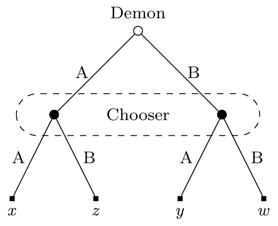

1 Introduction
1.1 Ten Features of a Good Decision Theory
Textbook versions of game theory embed a distinctive approach to decision theory. That theory isn’t always made explicit, and it isn’t always clear how it handles some cases. But we can extract an interesting and plausible theory, which I’ll call Gamified Decision Theory (GDT), from these textbooks. I will focus on these ten characteristics of GDT, with one chapter to come on each.
- Idealised: GDT is a theory of what ideal deciders do.
- Expectationist: The ideal decider prefers getting more expected value to getting less.
- Causal: GDT is a version of Causal Decision Theory (CDT).
- Allows Mixtures: The ideal decider can perform a probabilistic mixture of any acts they can perform.
- Ratificationist: The ideal decider endorses the decisions they make.
- Dual Mandate: In a dynamic choice, the ideal decider will follow a plan that’s permissible, and take choices at every stage that are permissible.
- Indecisive: GDT sometimes says that multiple options are permissible, and they are not equally good.
- Selection: The aim of decision theory is to generate a function from possible choices to choice-worthy options, not to generate a preference ordering over the options.
- Substantive Probability: The ideal decider has rational credences.
- Weak Dominance, Once; The ideal decider will not choose weakly dominated options, but they may choose options that would not survive iterated deletion of weakly dominated strategies.
This is not going to be a work of exegesis, poring over game theory texts to show that they really do endorse all ten of these. In fact it wouldn’t take much work to show that they endorse 1-5, so the work wouldn’t be worth doing. And while some textbooks endorse 9 and 10, it would take a lot more investigative work than I’m going to do here to show that anything like a majority of them do. It would be interesting, but not obviously a philosophical question, to see what proportion endorse 6, 7 or 8. But I’m going to set those interpretative questions aside.
What I do want to argue is that you can find some support for all of these in some game theory textbooks, and that combined they produce a plausible decision theory. While the textbooks don’t all agree, for simplicity I’m going to focus on one book: Giacomo Bonanno’s Game Theory (Bonanno 2018). This book has two important virtues: it is philosophically deep, and it is available for free. It isn’t hard to find a game theory text with one or other of these virtues, but few have both. So it will be our primary guide in what follows, along with some primary sources (most of which are referenced in that book).
1.2 Demons
A lot of contemporary philosophical decision theory revolves around what to do if there is a certain kind of demon around. Following Nozick (1969), such a demon is typically taken to be arbitrarily good at predicting what a human deliberator will do. I’ll call our arbitrary deliberator Chooser, and a typical demon Demon. Whenever X is a choice Chooser can make, I’ll use PX to mean that Demon predicts Chooser chooses X. It’s not so common to have problems where there are two such demons around, but I’ll make heavy use of them, and in such cases I’ll be clear about whether PX means that the first or the second demon predicted that Chooser will do X. These are predictions, and we assume that causation runs from past to future, so what Chooser does has no causal impact on what Demon predicts.
I’m squeamish about assigning probability 1 to predictions that are causally isolated from the thing being predicted; I have reductionist enough views about causation to think that if a prediction is correct with probability 1, that raises questions about whether causation does really run from past to future in this case. So I prefer to say that Demon is correct with a probability close enough to 1 that it doesn’t matter for the purposes of the problem being analysed. But this squeamishness, and the associated reductionism about causation, is not part of GDT. If you’re happy with having causally isolated demons who are correct with probability 1, everything else I say should be acceptable. Indeed, some of the reasoning goes through even more smoothly with perfectly accurate, but causally isolated, demons.
A generic binary choice problem involving Chooser and Demon can be depicted by Table 1.1.
| PA | PB | |
|---|---|---|
| A | x | y |
| B | z | w |
Chooser selects A or B, Demon predicts the choice, and there are four possible outcomes. Slightly more perspicuously, it can also be depicted by Figure 1.1. In this figure we start at the open circle (at the top of the tree), then move down, with the label showing who makes the choice. The dashed lines around the two nodes on the middle level mean that when we get to those nodes, Chooser knows we are at one of these two, but doesn’t know which one. In game-theoretic terms, the nodes are part of a common information set. I’ll have much more to say about these starting in Chapter 7.
I’ve written variables here where the outcomes go. These are going to be replaced with numbers in any example here. That is, I’ll assume that the value of outcomes can be measured numerically, with greater numbers being better. I’ll come back to this assumption briefly in Chapter 2, and more substantively in Chapter 3.
Following Nozick (1969), the most common problem that people discuss involving Demon is what Nozick dubbed “Newcomb’s Problem”, after the physicist who suggested the problem to him. A Newcomb problem is an instance of Table 1.1 satisfying the following constraints.
- z > x
- w > y
- x >> w
The standard example uses (more or less) the values in Table 1.2, but all that really matters are the three inequalities above.
| PA | PB | |
|---|---|---|
| A | 1000 | 0 |
| B | 1001 | 1 |
Option A and B are typically called ‘one-boxing’ and ‘two-boxing’ respectively, because they involve selecting either one or two boxes in the vignette Nozick gives to go along with the story. But what really matters is the schematic form, not the details of the physical setup.
Nozick distinguishes two approaches to this problem you might take. He doesn’t use the following terms, but they quickly became identified as Evidential Decision Theory, and Causal Decision Theory. Evidential Decision Theory (EDT) says that one should first assign values to each option using the following formulae. I’ll just give the formulae for the case where there are two states of the world, PA and PB, but it should be clear how to generalise this to the case where there are m possible states. When X is a choice and Y a state, I’ll use V(XY) to mean the value of choosing X in state Y. So for example in Newcomb’s Problem, V(BPA) = 1001; if Chooser selects B and Demon predicts A, Chooser’s payout is 1001. And I’ll use Pr(Y | X) to mean the probability of being in state Y conditional on choosing X. Using this terminology, EDT says that the value of the choices is:
| V(A) = V(APA) · Pr(PA | A) + V(APB) · Pr(PB | A) |
| V(B) = V(BPA) · Pr(PA | B) + V(BPB) · Pr(PB | B) |
So in Newcomb’s Problem, if Demon is, say, 90% reliable, we have:
| V(A) = 1000 · 0.9 + 0 · 0.1 = 900 |
| V(B) = 1001 · 0.1 + 1 · 0.9 = 101 |
Then EDT says that higher valued options are better, so A is better than B, since 900 > 101. And if Demon is even more reliable than 90%, that gap just grows further.
Causal Decision Theory (CDT), on the other hand, is moved by the following argument. Whatever Demon has predicted, Chooser is better off choosing B than A. That, says CDT, settles things; Chooser should take option B. I think this is right; Chooser should choose B, and they should do so for this reason. But note that this is not anything like a complete theory of choice. Two people could agree with this little argument and have any number of different views about problems that not so easily disposed of. In this book, especially in Chapter 8, I’ll spend a lot of time on problems like ?tbl-tbl-stag-decision-first.
| PA | PB | |
|---|---|---|
| A | 6 | 0 |
| B | 5 | 2 |
1 I say much more about why the problem has this label in Appendix A.
It turns out that among people who endorse the little argument for choosing B in Table 1.2, there are at least four distinct views about what to do in Stag Decision.
- Frank Arntzenius (2008) and Johan E. Gustafsson (2011) recommend Choosing A.
- Ralph Wedgwood (2012), Dmitri Gallow (2020), Abelard Podgorski (2022), and David Barnett (2022) recommend choosing B.
- James Joyce (2012) says that what Chooser should do is a function of Chooser’s probability distribution over their choices prior to deliberating about what to do.
- Jack Spencer (2021) and Melissa Fusco (n.d.) say that Chooser can rationally take either option.
I’m going to side with option 4. Though note that Spencer and Fusco disagree about what Chooser should do in several other cases. Most notably, they disagree in cases that are like Stag Decision but with the payouts inverted. In those cases, GDT is going to side with Fusco against Spencer.
It’s not obvious, either from the description of the problems or the history of the philosophical discussion, which if any of these theories should get the name “Causal Decision Theory”. Some people write as if Joyce’s view is the unique one that should get that name; indeed many of the people I’ve listed above describe themselves as critics of CDT who are offering an alternative to it. I think that’s not the most helpful way to classify views. All of them accept that in Newcomb’s Problem, Chooser should choose option B, and that Chooser should choose it because Chooser can’t make a causal difference to whether PA or PB happens, and either way, B is better than A. That’s the core idea behind Causal Decision Theory.
A decision theory should say what to do not just in one problem, but across a family of problems. It should say what to do in Stag Decision for example. As I’m using the term, Causal Decision Theory, as such, is neutral between the four possible approaches to Stag Decision So it isn’t a theory. Rather, it is a family of theories, that all agree about what to do in Newcomb’s Problem, and about why to do it, but disagree in different problems.
So as I’m using the term, Causal Decision Theory is not a theory. That might be surprising, since it has the word ‘Theory’ in the name. But we’re used to things like the United States of America which includes parts that are neither States nor in America (e.g., Guam). We can live with Causal Decision Theory not being a theory, and instead being a family that agree about what to do, and why to do it, in Newcomb’s Problem. The bulk of this book will be an in house dispute between causal decision theories, though I’ll spend some time objecting to EDT, and also some time objecting to other theories that reject both CDT and EDT.2
1.3 Gamified Decision Theory
The actual theory I will defend, GDT, is a version of what’s sometimes called causal ratificationism.
The ‘causal’ in causal ratificationism means that there are constraints on the proper formulation of a decision problem. EDT says it does not matter how we divide the world into states; decision theory should give the same verdict. If we rewrite Newcomb’s Problem with the states being that Demon predicted correctly, and that Demon predicted incorrectly, EDT gives the same recommendation, for essentially the same reason. GDT, like all causal theories, rejects this. The correct formulation of a decision problem requires that the states, like PA and PB, be causally independent of the choices that Chooser makes. I have a fairly strong version of this independence constraint, which I’ll discuss more in Chapter 4.
The ‘ratificationism’ in causal ratificationism means that Chooser will ratify their choice once they make it, i.e., that Chooser will not regret a rational choice as soon as it is made. Formally, this means that Chooser will only choose A in cases like Table 1.1 if the following inequality holds.3
3 In general, the sum on each side of the inequality ranges over all possible states, so if there are more than two states, there will be more than two summands on either side. And A must be ratified compared to all alternatives, so if there are more than two options, this inequality must hold if you replace B with C, D, or any other choice.
| V(APA) · PrA(PA) + V(APB) · PrA(PB) ≥ V(BPA) · PrA(PA) + V(BPB) · PrA(PB) |
By PrA I mean the rational probabilities that Chooser has after choosing A. If there is more than one rational probability that Chooser could have, all that matters is that the inequality hold for one such probability function.4 In somewhat technical English, what this inequality says is that once A is chosen, the expected value of choosing A is at least as great as the expected value of having chosen B. That’s what I mean by ratifiability; once Chooser selects A, they think it was for the best (or at least equal best) that they chose it.
4 If there is more than one alternative to A, and more than one rational probability function, the rule is that there is some probability function such that A does better than every possible alternative, if we put that function into the inequality above. It’s not enough that for each alternative there is some probability function that judges A to be better than the alternative.
I’m far from the first to endorse ratifiability as a constraint on decisions. It’s defended by William Harper (1986), in a paper that was a central inspiration for this project, both because of its conclusions, and because of the way it connected decision theory to game theory. I’ll talk about the ratifiability constraint much more in Chapter 6.
GDT, as I’m defining it, has three extra features beyond this causal ratification constraint, and I’ll end this chapter with a brief discussion of each of them.
GDT says that permissible choices are not weakly dominated. An option weakly dominates another if it could be better, and couldn’t be worse. So in Table 1.4, A is not a permissible choice because it is weakly dominated by B.
| PA | PB | |
|---|---|---|
| A | 2 | 0 |
| B | 2 | 1 |
Since B could be better than A, if Demon predicted B, and could not be worse than A, at worst they produce the same outcome if Demon predicts A, B weakly dominates A. And weakly dominated actions are not rational choices. So in this problem the only rational choice is B. This is not particularly intuitive, but I don’t think agreement with first pass intuition is a particularly strong constraint on decision theories, for reasons I’ll go over in Chapter 3. And I’ll have much more to say about weak dominance, and in particular why I reject an iterated version of the weak dominance constraint, in Chapter 11.
In dynamic choices, GDT says that Chooser must satisfy two constraints. First, the plan they make for what to do over time, what we’ll call a strategy5, must be a permissible choice of strategy. Second, at each point in time, they must choose an option that would be permissible were the dynamic choice problem to have started at that point, with that set of options. These two constraints, which I’ll discuss much more in chapter Chapter 7, have some surprising consequences. Imagine that Chooser has the following two-stage problem. At stage 1, they can choose to Exit or Continue. If they Exit, they get 5. If they continue, they make a choice in the problem depicted in Table 1.5.6
5 A strategy in this sense must plan for what to do in every possibility, including possible choices ruled out by earlier choices.
6 In this problem, the Demon makes a prediction after Chooser opts to Continue, but this prediction is only revealed after Chooser selects A or B.
| PA | PB | |
|---|---|---|
| A | 4 | 4 |
| B | 0 | 8 |
The plan of Continuing, then choosing A, is not a sensible plan. Chooser knows from the start that there is a plan which is guaranteed to be better, namely Exiting. If they Exit, they are guaranteed to get 5, if they Continue then choose A, they are guaranteed to get 4. So they may not Continue then choose A. But this does not mean that they must Exit. They may Continue and choose B. Now here’s the surprising part. If they faced Table 1.5 as the first choice they have to make, they could choose B, but they also could choose A. In Table 1.5, A is ratifiable and not weakly dominated. So GDT is not a purely consequentialist decision theory. By that I mean that sometimes, choices that Chooser makes earlier in a dynamic choice situation constrain which choices are rational later in the game. A lot of versions of CDT do not specify how they are to be extended into theories of dynamic choice, but my impression is that many philosophers, and especially many philosophers who endorse CDT, do think decision theory should be purely consequentialist, and GDT disagrees with them on this point.
There are some decision theorists who agree with GDT that decisions should not be strictly consequentialist. These include the resolute theorists, in the sense of McClennan (1990), and the functional theorists, in the sense of Levinstein and Soares (2020). But GDT disagrees with them as well. Those theorists think that the only thing Chooser must do is choose a sensible plan, and then at each stage Chooser should just carry it out. In section Section 7.3 I’ll argue against the idea that the choice of a rational strategy always lines up with the choice of rational moves at each point in a dynamic choice problem.7 Then in section Section 7.4 I’ll argue against the view that choosing a rational strategy suffices for rational play in a dynamic choice problem. The upshot will be that GDT requires that every action be sensible at the time it is taken, not just part of a sensible strategy, and that conflicts with most other theories that care about strategies.
7 One might have expected it would be easy to generate examples where this fails in GDT, by simply translating the examples of games involving incredible threats (Bonanno 2018, 86) into demonic decision problems. It turns out to be harder than one might have expected, or at least than I originally expected, to come up with such a case where (a) one player is Demon, and (b) the ‘threat’ strategy is not weakly dominated. And in Chapter 11 I’m going to follow Stalnaker (1999) in ruling out weakly dominated strategies. That explains some of the complications in the example to follow.
Finally, my version of GDT says that what matters for rational choice is what probabilities over states are rational, not which probabilities Chooser happens to endorse. GDT is a theory of rational choice simpliciter, not a theory of rational choice given possibly irrational beliefs. I’ll have more to say about this in Chapter 10.
1.4 Dynamic Arguments for Static Theories
The full argument for GDT takes the bulk of the book to set out. There is, however, a much shorter argument for something in the ballpark of GDT, and certainly for something distinct from most existing views in the philosophical literature, that starts with three principles about dynamic choice. This is not because GDT is itself a dynamic theory; in the first instance it is a version of causal ratificationism, a static theory. The point is that only certain static theories are even capable of being extended into decent theories of dynamic choice, and this is a tighter constraint than has always been appreciated.
The first of the three principles concerns the following situation.8 If p is false, Chooser’s payouts are (causally) independent of anything they do. If p is true, Chooser will have to make a single choice. But if they do, they won’t learn anything relevant other than that p is true before choosing. In game theoretic terms, the tree of the game Chooser is playing has just one node where they act, and it’s a singleton information set. These are fairly tight constraints; most dynamic choice situations involve either multiple possible choices, or multiple things that one could learn before a choice. We’re just interested in this very special case.
8 In Chapter 8 I’m going to call this the Single Choice Principle, because it concerns dynamic choice situations where Chooser has only one possible choice to make.
The principle I rely on is that in such a situation, it doesn’t matter whether Chooser is asked to choose before or after learning that p is true. That is, if they are asked to come up with a strategy, which in this case is just a plan for what to do if p is true, that’s just the same as being told that p is true, and being asked to come up with a move. Slightly more informally, the following two questions should get the same answer because in some deep sense they are the same question:
- If p is true, what do you want to do?
- Hey, p is true. What do you want to do?
This principle is violated by, among others, the theory of choice that Lara Buchak (2013) defends.9 Imagine that Suzy has two things she is planning to give away. The first is a lottery ticket that has a 50% chance of being worth $4, and a 50% chance of being worth nothing. The second is a dollar. She is going to give one to Billy and the other to Teddy. She comes up with the following somewhat convoluted plan to decide what to do. She’s going to flip a fair coin. If it lands heads, Billy will get the ticket. If it lands tails, Billy will get a choice of the ticket or the dollar. Billy’s risk-function10 r is r(p) = p2. And money has an ever-so-slightly declining marginal utility for Billy.11 Then if Billy follows Buchak’s theory, he’ll say the following things. Ask him before the coin is flipped what he would like if it lands tails, and he’ll say the ticket. Tell him the coin has landed tails, and ask him what he’d like, and he’ll say the dollar. That looks inconsistent, even incoherent, to me, and it’s enough reason for me to look for a separate theory.12
9 Buchak offers a very clear outline of her view in her (2017).
10 On the role of risk-functions in Buchak’s theory, see (Buchak 2017, 2366).
11 The example is not sensitive to the details on this point, but to make it concrete, imagine that Billy’s utility from wealth w is log(w), and he currently has a few thousand dollars.
12 In Appendix D I go over a more general version of this example, showing that unless the risk-function is the identity function, such a problem can arise. If the risk-function is the identity function, Buchak’s theory does not disagree with GDT.
The second principle says that in a dynamic choice situation, every choice that a rational chooser makes must make sense in purely forward-looking terms. That is to say, every choice must be one that could be rationally made if it were the first choice being made in a different, simpler, dynamic choice. It’s easiest to see what this rules out by looking at an example. This is going to be a version of Newcomb’s Problem without any suspense, i.e., with the Chooser being allowed to look inside the boxes.
Chooser is going to be presented with two boxes, one red and one blue. The boxes will be open, so Chooser will see what’s in them. Chooser will be allowed to take the contents of one of them, at their choice. There is a Demon who predicted Chooser’s choice. If Demon predicted Chooser would choose the red box, they put $10 in the red box, and $11 in the blue box. If Demon predicted Chooser would choose the blue box, they put $0 in the red box, and $1 in the blue box. The second principle says that in this case, Chooser must take the blue box. What it rules out is the following reasoning, which is endorsed by, e.g., Levinstein and Soares (2020). The optimal strategy is to plan to take the red box, since on average that gets $10 rather than $1. Then when the boxes are opened, what Chooser should do is carry out the optimal strategy, i.e., take the red box. The second principle says that reasoning is illegitimate. If Chooser is going to take the red box now, they must be capable of defending that decision using purely forward-looking considerations.13 And that’s impossible to do, since there is quite clearly one more dollar in the blue box. The only consideration in favour of the red box is backward-looking; it correlates with getting a more favourable distribution of funds to the boxes.
13 This is consistent with what I said about about GDT not being a purely consequentialist theory. There I said that non-consequentialist constraints can rule out something makes sense on purely consequentialist grounds. Here I’m saying that only things that are allowed by consequentialism are allowed full stop.
The third principle is a converse of sorts to the third. It says that at the end of a series of choices, a rational chooser must be able to defend why they made that series of choices rather than some alternative series.14 To see why this matters, it helps to use a version of GDT that I used to believe was correct, before I considered what it said about examples like Table 1.5. This theory says that all that matters for choice at a time is that one do something ratifiable (and not weakly dominated), and that all that matters for dynamic choice is that one equates the possibility of reaching a future choice with a lottery ticket whose payouts are the payouts of that later choice, with the probabilities of each payout of the ticket the same as the probability one gives to the payouts of the later choice.
14 There are a bunch of caveats needed on this, and I go over them more in Chapter 7. For now, all that matters is that the example I’ll use does not violate any of the needed caveats.
Start with this theory, and think about the following kind of Chooser. They think that if they don’t exit, and instead choose to play Table 1.5, it’s just as likely that they’ll choose A as B. After all, both are rational. So playing the game has an expected return of 6, while exiting has a guaranteed return of 5, so they play the game. And then they play A, and they get 4. This seems irrational; they could have got 5. The third principle says that it is irrational. The strategy, play the game then choose A, is not a strategy one could defend as a whole. The alternative strategy of exiting15 strictly dominates it. According to GDT, a series of choices, each rational in themselves, can be collectively irrational. And that’s what is distinctive about the third principle. In game-theoretic terms, it says that one’s sequence of choices (and dispositions to choose in unreached nodes of the game-tree) must be defensible if one was choosing a strategy. And this turns out to be a non-trivial constraint.
15 To be more precise, there are multiple exit strategies, which differ in what one is disposed to do if one doesn’t exit. This level of precision will occasionally matter, but not that often.
None of these three principles will strike people working in decision theory as particularly novel. I’ve framed them in terms of choice-worthiness rather than preference, which makes them a bit weaker and hence more plausible. And as the book goes on I’ll offer some somewhat new arguments for them. But none of them alone are particularly innovative. What is, I think, more innovative, is putting them together. While many theories exist that satisfy at least one of them, or even satisfy some pair of them, as far as I can tell, only versions of causal ratificationism look capable of satisfying all three.
If there is a single master argument of the book, it is that the right decision theory complies with these three principles, only causal ratificationism complies with these three principles, so the correct decision theory is a form of causal ratificationism. I’ll have much more to say about the principles, and about the particular form of causal ratificationism I prefer. That argument, however, is the simplest guide to where we’re going.